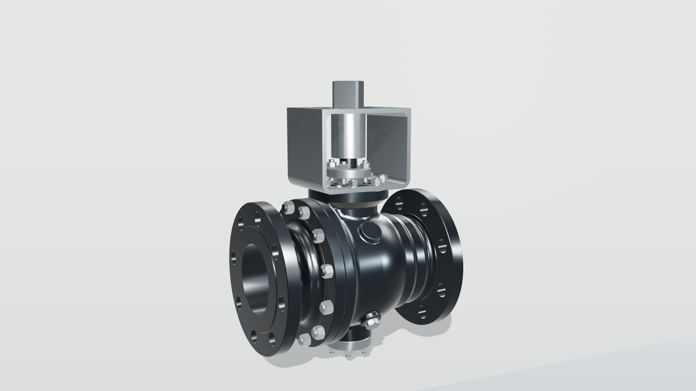
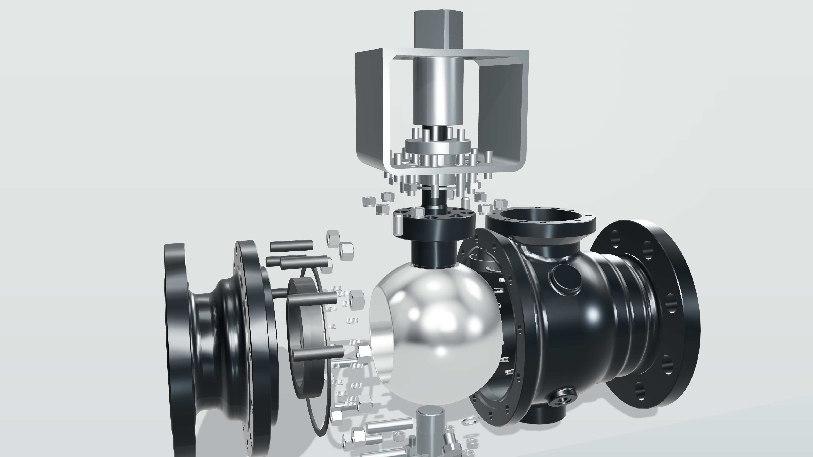
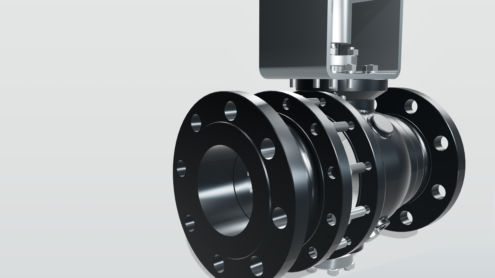

材质分层
阀体为深石墨金属，球芯为抛光不锈钢，阀座/密封为暗色低反射，小五金更亮但不抢主角。
机械边界
球芯仍是单件隔离；阀座和阀座密封保持固定材质组，不跟随球体旋转。
生产边界
这是 Three.js 高分辨率 lookdev 基准，不是最终路径追踪母版；正式 240 帧需在通过后另开。
Goal 15 / 4K industrial material lookdev
这一版暂停流体动画，把重点收敛到工业产品广告质感：深石墨阀体、抛光球芯、暗色固定阀座、机加工小五金和摄影棚长条高光。 它是 4K 静帧材质基准，不接首页，不生成 240 帧正式序列。



阀体为深石墨金属，球芯为抛光不锈钢，阀座/密封为暗色低反射，小五金更亮但不抢主角。
球芯仍是单件隔离；阀座和阀座密封保持固定材质组，不跟随球体旋转。
这是 Three.js 高分辨率 lookdev 基准，不是最终路径追踪母版；正式 240 帧需在通过后另开。